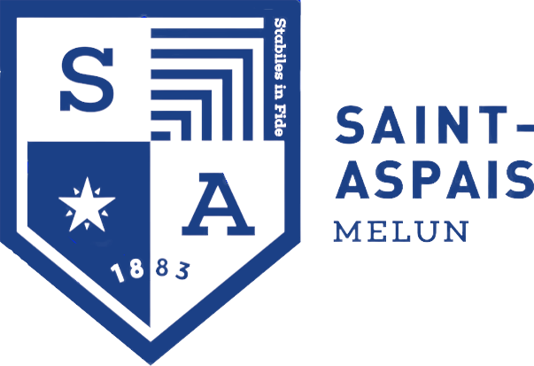

Présentation
Passionné par l'informatique et les nouvelles technologies, j'ai naturellement choisi de m'orienter vers un BTS Services Informatiques aux Organisations (SIO), option Solutions d'Infrastructure, Systèmes et Réseaux (SISR), que j'effectue en alternance au sein du support informatique de l'URSSAF depuis septembre 2024.
L'alternance s'est imposée comme une évidence, car elle me permet de combiner enseignements théoriques et mise en pratique, dans la continuité de mon baccalauréat professionnel Systèmes Numériques.
Mon expérience au sein du support informatique me donne l'opportunité d'appliquer les compétences acquises à l'Efrei. J'y développe notamment des compétences techniques telles que la gestion de parc informatique, le traitement des incidents et des demandes, ainsi que des compétences relationnelles grâce au contact direct avec les collaborateurs.
Expériences
Technicien Support Informatique - Alternance URSSAF
Septembre 2024 - Juin 2026
- Support N1/N2 : gestion et résolution d'incidents
- Gestion de parc informatique : postes, équipements, maintien de parc à jour
- Déploiement / masterisation de postes avec Ivanti
- Utilisation de console de déploiement Ivanti
Support Informatique - Stage URSSAF
Décembre 2023 - Janvier 2024
Support utilisateurs / préparation de postes / brassages réseaux
Support Informatique - Stage Warner Bros
Juin 2022 - Juillet 2022
Préparation de postes / brassages réseaux
Support Informatique - Stage Mairie de Dammarie-les-Lys
Décembre 2021
Réparation de postes / dépannage dans la ville
Parcours scolaire
2026
BTS SIO en alternance à EFREI Paris
2024
Bac Pro Systèmes Numériques option RISC
Formation
Efrei Paris - BTS SIO option SISR 2024 - 2026

Lycée Saint Aspais - Bac Professionnel Systèmes Numériques option RISC 2021 - 2024